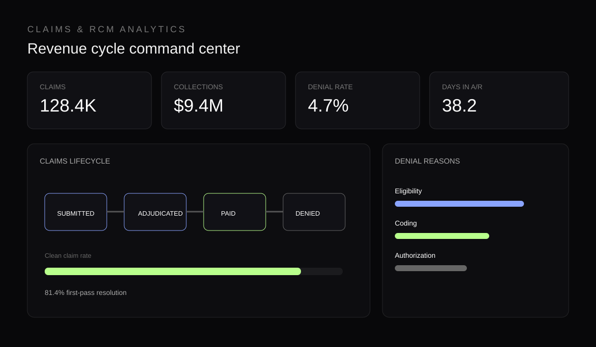

← All projectsClaims & RCM
04 / HEALTHCARE
Claims & RCM
Analytics.
Healthcare analytics focused on claims lifecycle, collections, denials and revenue-cycle performance.

The work
See where revenue gets stuck.
The dashboard brings claims activity, collections, denial reasons and accounts-receivable indicators into a single operational view.
ClaimsLifecycle volume
DenialsRoot causes
A/RCollections health
Operational questions
What is paid?
What is denied?
What needs action?
The reporting view is structured around the revenue-cycle journey, helping users identify bottlenecks and focus attention on claims and denial categories that need investigation.